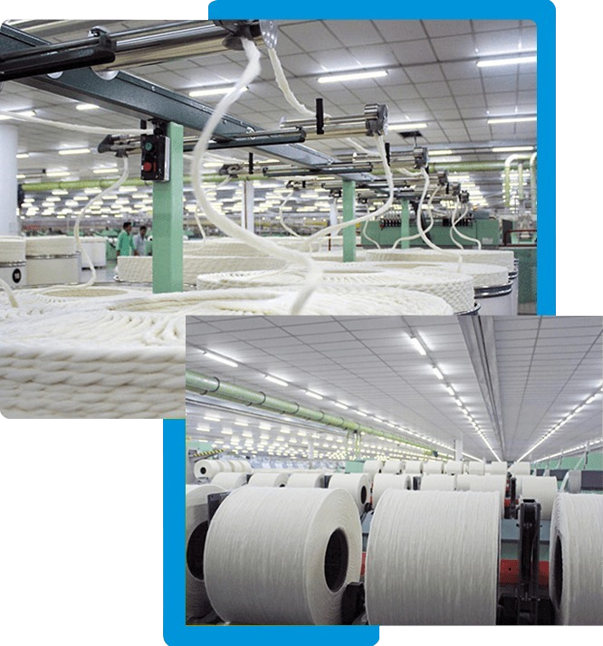
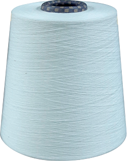
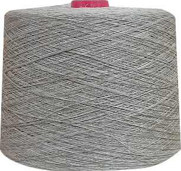
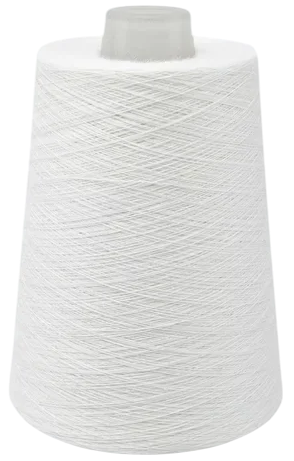
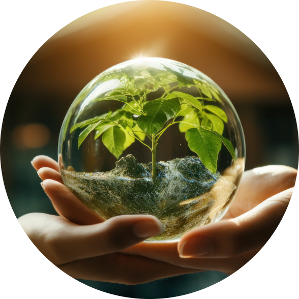

Sintex Yarns has redefined the Indian textile landscape, emerging as a symbol of innovation, scale, and sustainability. Located in Gujarat, the largest cotton-producing state in India, Sintex operates India’s largest spinning plant, with over 6.73 lakh spindles spread across 523 acres. This remarkable achievement has established Sintex as a leader in the industry.
Since its establishment in 2014, Sintex Yarns has continuously created value by leveraging the economy of scale to deliver competitive, high-quality products, and by expanding into international markets through strong customer partnerships. Our integration with the Reliance Group (Fortune Global 500) in 2023 marked a significant leap in capability, credibility, and global reach combining Sintex’s world-class spinning expertise with Reliance’s unmatched resources. Together, we drive innovation, sustainability, and supply chain excellence across every link of our value chain.

Building world-class yarn solutions with integrated strength and global reach.
Sintex Yarns offers a versatile and innovative product range tailored to meet the dynamic needs of global industries.
We are one of India’s largest manufacturers of 100% cotton yarn. Our cotton yarns are spun from the finest natural fibres, offering exceptional softness, breathability, and strength. Engineered to be skin-friendly and long-lasting, our yarns are trusted across a wide range of applications..
Learn More
Our 100% linen yarns are crafted from premium European flax fibres celebrated for their natural lustre, exceptional breathability, and remarkable strength. As one of India’s largest manufacturers of 100% linen yarn, we ensure uncompromised quality through superior flax sourcing, precision-controlled spinning..
Learn More
Our sustainable yarns are developed with a strong commitment to environmental responsibility. We incorporate eco-friendly materials such as organic cotton, recycled fibres, and biodegradable blends, produced through resource-efficient processes..
Learn More
Sintex is a leading manufacturer of absorbent cotton (Surgical Cotton) in India. Known for its high absorbency, our cotton is widely used in the medical industry for dressings and other applications.
Learn More
Processing 6,000 KLD of wastewater, ensuring no discharge.
Achieving 92% water recovery, significantly lowering water wastage.
Advanced wastewater treatment for a complete, eco-friendly water cycle.
By seamlessly integrating innovative technology with eco-conscious practices, Sintex Yarns exemplifies sustainability at every level, from production to product.
Explore More
Sintex Yarns continues to lead, inspire and redefine global textile standards. Together, we create a future where possibilities are limitless.
